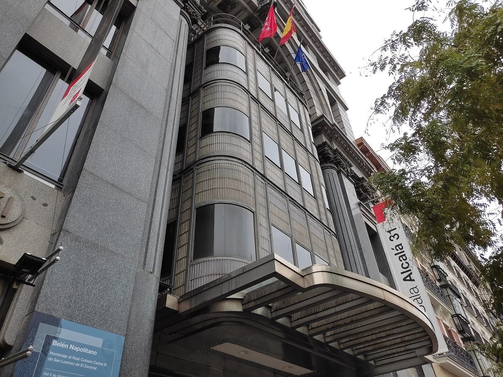

스페인 마드리드 자치주, 문화재 청사 '알칼라 31' 지붕에 자가소비 태양광 입찰…지붕 630㎡ 중 130㎡만 쓸 수 있어

예정가 8만2,922.30유로·공사 약 2개월, 패널 59장 최대 출력 20.65kW…탑 그늘·냉난방 설비·문화재 보호로 면적 제한, 패널은 바닥과 나란히 깔아 외관 영향 줄여 문화재 위원회 동의
스페인 마드리드 자치주 정부가 문화·관광·체육부 청사로 쓰는 알칼라 거리 31번지 건물 지붕에 자가소비용 태양광을 다는 공사를 입찰에 부쳤다. 건축가 안토니오 팔라시오스(Antonio Palacios)가 설계한 이 건물은 보호 문화재(BIC)여서, 지붕 630㎡ 가운데 설비실을 덮은 철망 바닥 약 130㎡에만 패널을 놓을 수 있다. 탑과 돌출부가 드리우는 그늘, 냉난방 설비, 문화재 보호 규정 때문에 나머지 면적은 쓰기 어렵고, 설계안은 350W 패널 59장으로 최대 출력 20.65kW, 정격 20kW 규모다. 예정가는 8만2,922.30유로, 공사 기간은 계약 서명 뒤 약 2개월이다. 전기는 건물에서 먼저 쓰고 모자라면 계통에서 받으며 남으면 계통으로 보낼 수 있고, 패널을 바닥과 나란히 쟁반처럼 까는 방안은 자치주 문화재 위원회의 동의를 받았다.
시민에너지 관점
지붕 630㎡ 가운데 130㎡, 약 20kW라는 숫자는 도심 공공건물 한 채가 홀로 감당할 수 있는 몫이 작다는 현실을 보여 준다. 태양광이 문화재와 도심 경관을 해친다는 우려는 패널을 눕혀 깔고 문화재 위원회의 동의를 받는 이번 설계처럼 풀어 갈 수 있다. 스페인은 2019년 왕령으로 가까운 건물끼리 한 설비의 전기를 나눠 쓰는 집단 자가소비의 길을 열었는데, 공공건물 지붕을 주변 주민·상인과 함께 쓰는 공동 설비로 묶으면 작은 지붕들이 모여 동네의 발전소가 된다. 국내 지자체도 청사·문화시설 지붕을 하나씩 따로 계산하지 말고, 주민이 함께 소유하고 나눠 쓰는 공동 설비로 설계해야 한다.
출처: La Razón 2026-11-03 Susana Campo 원문 보기
スペイン・マドリード自治州、文化財の庁舎「アルカラ31」の屋根に自家消費型太陽光を入札…屋根630㎡のうち使えるのは130㎡のみ
予定価格8万2,922.30ユーロ・工期約2カ月、パネル59枚で最大出力20.65kW…塔の影・空調設備・文化財保護で面積に制約、パネルは床面と平行に敷いて外観への影響を抑え文化財委員会が同意
スペインのマドリード自治州政府は、文化・観光・スポーツ部の庁舎として使うアルカラ通り31番地の建物の屋根に、自家消費用の太陽光発電を設置する工事を入札にかけた。建築家アントニオ・パラシオス（Antonio Palacios）が設計したこの建物は保護文化財（BIC）で、屋根630㎡のうち設備室を覆う金属グレーチングの床、約130㎡にしかパネルを置けない。塔や突出部が落とす影、空調設備、文化財保護の規定のため残りの面積は使いにくく、設計案は350Wのパネル59枚で最大出力20.65kW、定格20kWの規模となる。予定価格は8万2,922.30ユーロ、工期は契約署名後約2カ月だ。電気はまず建物で使い、足りなければ系統から受け、余れば系統に送ることができ、パネルを床面と平行にトレーのように敷く案は自治州の文化財委員会の同意を得た。
市民エネルギーの視点
屋根630㎡のうち130㎡、約20kWという数字は、都心の公共建物1棟が単独で担える分は小さいという現実を示している。太陽光が文化財や都市景観を損なうとの懸念は、パネルを寝かせて敷き、文化財委員会の同意を得た今回の設計のように解決していける。スペインは2019年の勅令で、近くの建物同士が一つの設備の電気を分け合う集団自家消費の道を開いたが、公共建物の屋根を周辺の住民や商店と共有する共同設備にまとめれば、小さな屋根が集まって地域の発電所になる。韓国の自治体も、庁舎や文化施設の屋根を一つずつ別々に計算するのではなく、住民がともに所有し分け合う共同設備として設計すべきだ。
出典: La Razón 2026-11-03 スサナ・カンポ（Susana Campo） 原文を読む
西班牙马德里自治区为文物办公楼"阿尔卡拉31号"屋顶自用光伏招标…630平方米屋顶中只有130平方米可用
预算8万2,922.30欧元、工期约2个月，59块光伏板峰值功率20.65kW…塔楼阴影、空调设备和文物保护限制面积，光伏板与地面平行铺设以减少对外观的影响，获文物委员会同意
西班牙马德里自治区政府就其文化、旅游和体育厅办公楼——阿尔卡拉街31号建筑屋顶安装自用光伏的工程进行招标。这座建筑由建筑师安东尼奥·帕拉西奥斯（Antonio Palacios）设计，属于受保护文物（BIC），630平方米的屋顶中只有覆盖设备间的金属格栅地面约130平方米可以铺设光伏板。由于塔楼和凸出部分投下的阴影、空调设备以及文物保护规定，其余面积难以利用，设计方案为59块350W光伏板，峰值功率20.65kW，额定功率20kW。工程预算为8万2,922.30欧元，工期为合同签署后约2个月。电力优先供建筑自用，不足时从电网取电，有余时可送入电网；把光伏板像托盘一样与地面平行铺设的方案已获得自治区文物委员会同意。
市民能源视角
630平方米屋顶中的130平方米、约20kW，这组数字说明一栋市中心公共建筑单独所能承担的份额很小。对于光伏会破坏文物和城市景观的担忧，可以像这次设计那样，把光伏板平铺并取得文物委员会同意来化解。西班牙在2019年通过皇家法令开放了相邻建筑共享同一套设备电力的集体自用模式，若把公共建筑屋顶与周边居民、商户组成共同设备，小屋顶也能汇聚成社区的发电站。韩国地方政府也不应把办公楼和文化设施的屋顶逐一分开计算，而应设计成由居民共同拥有、共同分享的设备。
来源: La Razón 2026-11-03 苏珊娜·坎波（Susana Campo） 查看原文
Madrid regional government tenders self-consumption solar for the roof of its heritage-listed Alcalá 31 building, where only 130 of 630 square metres can be used
Budget of 82,922.30 euros and about two months of work for 59 panels with 20.65kW peak output; tower shadows, air-conditioning units and heritage protection limit the area, and panels laid flat to the floor to reduce visual impact have the heritage commission's approval
The Community of Madrid has put out to tender the installation of self-consumption solar panels on the roof of the building at Calle de Alcalá 31, which houses its regional ministry of culture, tourism and sport. Designed by architect Antonio Palacios, the building is a protected heritage site (BIC), so of its 630-square-metre roof only about 130 square metres of metal grating over the plant rooms can take panels. Shadows from towers and other projections, air-conditioning equipment and heritage rules make the rest of the roof hard to use, and the design calls for 59 panels of 350 watts each for a peak output of 20.65kW and a nominal 20kW. The budget is 82,922.30 euros, with work expected to take about two months after the contract is signed. The building will use the power first, draw from the grid when the panels fall short and be able to export any surplus, and the plan to lay the panels flat like a tray, parallel to the roof floor, has been approved by the region's heritage commission.
Citizen Energy View
The figures of 130 out of 630 square metres and about 20kW show how small a share a single city-centre public building can carry on its own. Concerns that solar panels spoil heritage buildings and the cityscape can be addressed as this design does, by laying the panels flat and winning the heritage commission's approval. Spain opened the way in 2019, by royal decree, for collective self-consumption in which nearby buildings share the power from a single installation, and if public roofs are pooled into shared installations with neighbouring residents and shops, many small roofs can add up to a neighbourhood power plant. Korean local governments, too, should stop counting the roofs of town halls and cultural facilities one by one and instead design them as shared installations that residents own and use together.
Source: La Razón 2026-11-03 Susana Campo Read the original